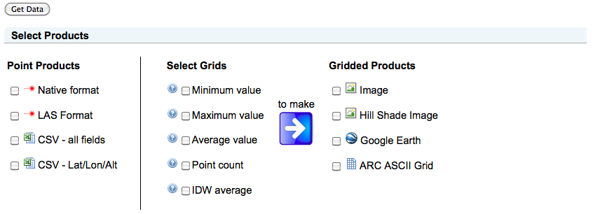
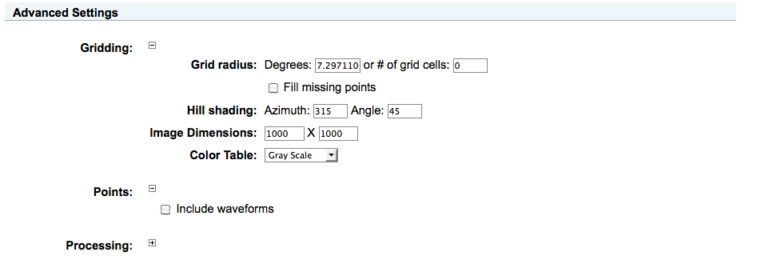

2 Data Subsetting and Conversion
RAMADDA provides an interactive service for point data subsetting,
converting and product generation.
This facility is available through the menu, e.g.:
LVIS/Costa Rica.
This facility is available for both individual point data entries as well
as Point collections. For collections certain products are not supported.
The subset and product form is composed of a number of
sections that allow you to select what
products are desired, specify subsetting information and provide information
about the processing job.
2.0 Product Selection
One can select any number of point or grid data formats:
Image 1: Product Selection
Under Point Products the "Native Format" will return the data in its original
format. For LAS we generate LAS 1.2. The LAS point format depends on what the
original data contains (e.g., rgb, intensity, time, etc).
Note: For now we don't write out the geotiff CRS section. All coordinates are assumed to be latitude/longitude/altitude
There are 2 forms of Comma Separate Values (CSV) provided: "all fields" and
"Lat/Lon/Alt".
All fields will include all of the Point observation parameters.
If the Point file has waveforms then you can also include the
waveform values in the CSV by checking the checkbox under
the
section.
You can also create a variety of gridded products from a variety of grids.
You select what grids you want (e.g., minimum value, inverse distance weighted average (IDW)) and you select what kinds of products you want to create.
Note: The gridding algorithms are being refined and have yet to be fully vetted.
The minimum, maximum and average values are simple gridding - i.e., the point value only affects a single grid cell.
The IDW average does an inverse distance weighted average within a region
of grid cells.
By default the altitude is the field that is gridded. However,
under Advanced Settings you can select other parameters (if available) to grid.
2.1 Subset Data
You can do both spatial subsetting and decimation. For decimation
you can select a skip factor or a probability. The skip factor allows you, for example, to use every 10th point (e.g., skip=9). The probability
is a value between 0 and 1, e.g., 0.3 = 30% probability that a point
will be included.
2.2 Advanced Settings
There are a number of processing options you can select under Advanced Settings:
Image 2: Advanced Settings
If you chose the IDW average grid product then you can specify
a radius of influence for each Point point. The radius can either be
in terms of degrees or number of grid cells.
If "Fill missing points" is checked on then grid cells that had no value
but are adjacent to grid cells that have values are filled with the
adjoining value. No attempt is made to average or interpolate the values.
The Hill shading azimuth and angle are used for the hill shaded image product.
You can also specify the dimensions of the grid or image and the color table
to use for the image product.
Note: The color table range is the min/max of the grid values.
2.3 Job Processing
When you submit a request the processing job will be run
asynchronously (unless you uncheck the option under Processing Options) and
you will be redirected to a Job Status page. This page will reload until the
processing is complete. At that time it will display links to the data files and
products that you selected.
If you specified an email address then RAMADDA will send you an email
notification when your processing request is completed.


{kind=link}
{kind=link}